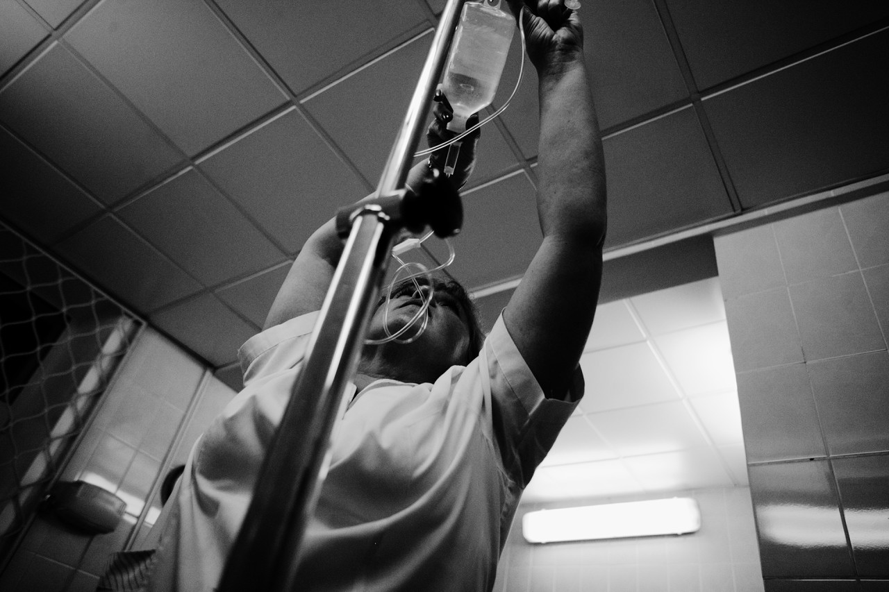

«Мои первые и, пожалуй, самые яркие ошибки были еще в университете. После третьего курса я устроилась работать медсестрой. Меня взяли, даже не проверив мои навыки. Мне нужно было поставить капельницу одному пожилому раковому больному — казалось, дотронешься до него, и он рассыплется. Я ни разу не колола в вену: ни на тренажере, ни на крепком человеке. А мне просто сказали: «Иди и делай. Все мы так начинали, и ты на практике научишься», — никого со мной не послали. После моих попыток у пациента были огромные гематомы на обеих руках, и возможности поставить капельницу просто не осталось. Меня отругали, сказали: «Что же ты такая безрукая. Уйди». И я даже не видела, что они потом делали. С тех пор я ни разу не колола в вену. Я врач с восьмилетним стажем, и это стыдно.
Конечно, это в первую очередь проблема системы образования. Я считала: меня учат всему, что мне понадобится, и я училась хорошо. Но, как выяснилось, если у тебя нет возможности ходить по различным кружкам в университете, ты оказываешься абсолютно неподготовленным. Старшие коллеги не поддержали меня и не помогали мне, когда я первый раз выполняла манипуляцию. Выходит, то, что случилось, это не вина кого-то одного, это комплексная ответственность. Тем не менее, трудно не винить себя: ты своими руками навредил кому-то. В итоге, я сознательно стала работать в той области, где минимум практических вещей.
Когда я начала работать педиатром, мои ошибки стали связаны с недостатком знаний. Например, на приеме у меня был с лихорадкой неясного происхождения ребенок, не привитый от пневмококковой инфекции. По международным стандартам он должен получить дозу антибиотика цефтриаксона, поскольку есть вероятность заражения крови бактериями. Я не назначила его, потому что не знала, строгая ли это рекомендация. Когда ребенок с родителями уехал, я решила уточнить и увидела, что давать цефтриаксон нужно обязательно. Я им позвонила и все объяснила.
Я всегда признаю свои ошибки и ни разу не пожалела об этом. Мне кажется, нормально, если врач чего-то не знает: объем информации огромный, и она постоянно обновляется. Но при этом, конечно, доктор должен по максимуму защитить себя от ошибок: сверяться с рекомендациями, руководствами и т. д. Беда только в том, что в России такая практика — это не обязанность, а инициатива врача. У нас доктор не обязан быть в курсе новых достижений медицины. То есть даже если врач год не мог диагностировать рак, потому что не назначил какой-то элементарный анализ, нет возможности доказать, что доктор не прав: нет точки опоры, стандартов. Я была однажды на разборе летального случая в городском департаменте здравоохранения после жалобы родственников погибшего пациента. Уровень дискуссии там был потрясающий. Глава комиссии, очевидно, проработала врачом очень недолго. И она объясняла доктору, на которого подали жалобу, что он должен был сделать. Надо ли говорить, что эти рекомендации были скорее вредными, чем полезными.
М. Г., невролог
«Много лет назад моей пациенткой была очень милая старушка лет 80. У этой женщины случались эпизоды дезориентации, которые напоминали мне преходящее нарушение мозгового кровообращения (транзиторные ишемические атаки). Я лечил ее в соответствии с тогдашними своими представлениями о том, что нужно делать в таких случаях: давал препараты метаболического действия, пытался лечить ее небольшую гипертонию и давал аспирин, — но эпизоды повторялись. Кроме того, у этой старушки была мерцательная аритмия, о которой я знал. Это состояние сопровождается очень высоким риском инсульта, который при правильном лечении можно предотвратить: назначив препараты, уменьшающие свертываемость крови. Я не сделал этого. Думаю, из-за пробела в образовании. Дело закончилось печально: у старушки случился инсульт, и она умерла. У нее был муж со старческим слабоумием, который, понятно, держался только благодаря тому, что она за ним ухаживала. Что с ним стало дальше, я не знаю. Я их часто вспоминаю.
я себя винил, но не до такой степени, чтобы уйти в запой или чтобы делать далеко идущие выводы
Конечно, я себя винил, но не до такой степени, чтобы уйти в запой или чтобы делать далеко идущие выводы о собственной квалификации. Это рабочая ситуация, и время лечит — постепенно ты перестаешь так остро переживать по этому поводу.
Пример списка
- «Даниловцы» расскажут, почему сделки с собственной совестью – это самый плохой мотиватор для волонтёра
- «Даниловцы» учат нас, людей с улицы, становиться профессионалами
- Если я и еще пять моих подружек переведём по 1000 рублей, то мы оплатим 1 из 36 уроков педагога
- А Мария Васильевна была на самом деле…
Впервые в детском доме в качестве волонтера я оказалась в 16 лет. До сих пор вспоминаю эту поездку, как один из самых сложных дней в моей жизни. Только представьте, что перед вами стоит 50 детей, смотрящих на вас с недоверием и не понимающих, чего от вас ожидать. Что мне делать? Как себя вести? Нас этому никто и никогда не учил. Все, что мы знали наверняка, – мы хотим помочь.